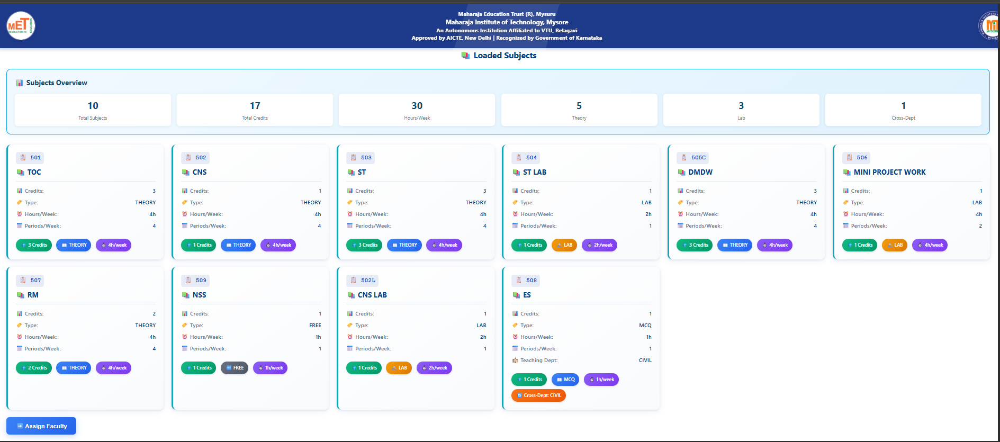
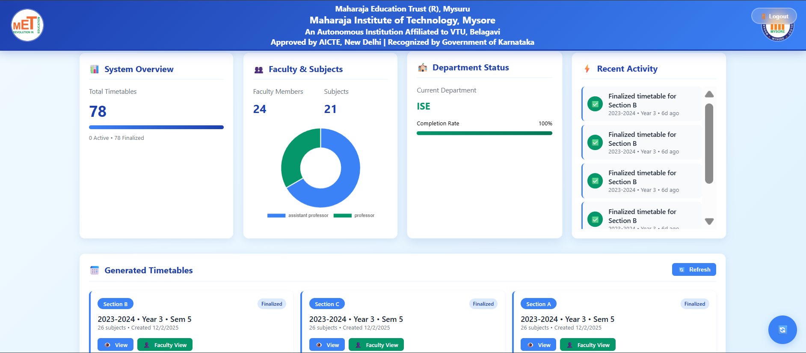

🏆 2nd Prize Winner
Smart Automated Timetable Generator
Python
Genetic Algorithm
Flask
Supabase
Project Presentation
Open the slide deck to explore the design, algorithm workflow, and the value it delivers to institutions.
Screenshots




